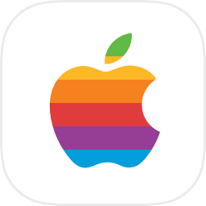
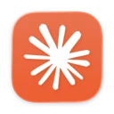
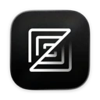
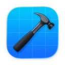
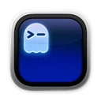
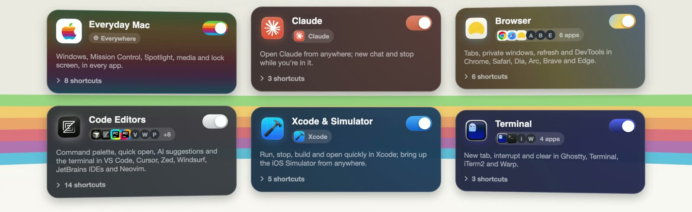

TapDeck
Your trackpad.
Now a shortcut panel.
Just $9 a year. For up to 3 Macs.

Try it
Tap. Watch the Mac answer.
Use three, four or five fingers at once on the trackpad below.Pick how many fingers, then click the trackpad: once, twice, three times, or hold. Click a corner for corner taps.
On a Mac, browsers never see multi-finger trackpad taps, so here you pick the fingers and click. The real app reads your fingers straight from the trackpad.
Shortcut packs
Switch them on like plugins.
36 packs, one for each app, from Chrome and Cursor to Figma, Final Cut Pro and Spotify. Each puts that app's most-used shortcuts on a few easy gestures, with more one click away. Need something else? Pick any command from an app's own menus and give it a gesture.

Everyday Mac
Mission Control, Spotlight, screenshots, play/pause and lock, in every app.

Claude
New session, command palette, terminal, and the previous or next session.

Browsers
A pack for each: Chrome, Safari, Dia, Arc, Firefox, Zen, Brave and more.

Code editors
A pack each for VS Code, Cursor, Zed, Windsurf, JetBrains and Neovim.

Xcode & Simulator
Run, open quickly, navigator, stop and build.

Terminal
New tab, split, clear and interrupt in Ghostty, Terminal, iTerm2 and Warp.

Built to feel instant.
TapDeck only listens. Pointing, clicking, scrolling and system swipes keep working exactly as before.
Finger readings
every second
The longest a tap
can last
Macs on one
licence
Accounts, trackers
or analytics
The water
The same water you see in the app.
Every Settings tab floats on it, and your fingers ripple it. Move your pointer across it.
Pricing
One plan. Everything in it.
- Every gestureTaps, holds, corners, 1 to 5 fingers.
- All 36 packsPlus packs and shortcuts you make.
- Up to 3 MacsMove it any time from Settings.
- A year of updates3 days free, then $9. Cancel any time.
Questions? Answers.
How do I install TapDeck?
After checkout, the thank-you page has a Download button for the latest version, also at this link. Open the DMG and drag TapDeck to Applications. TapDeck isn't notarized by Apple yet, so on first open go to System Settings › Privacy & Security and click Open Anyway. After that it updates itself.
Where do I get my licence key?
Right after checkout, on the thank-you page and in your receipt email. You can find it again any time in the Dodo Payments customer portal.
What happens when the year ends?
Your subscription renews for another $9 unless you cancel. If it ends, TapDeck pauses its gestures until you renew.
Can I use it on more than one Mac?
Yes, on up to 3 Macs at once. To move it to a new Mac, deactivate an old one in TapDeck's Settings › About.
Is there a free trial?
Yes, 3 days with everything unlocked. You add a card at checkout and aren't charged until the trial ends. Cancel before then and you pay nothing.
Can I get a refund?
Yearly charges aren't refundable, since the free trial is there to help you decide. Cancel any time to stop the next renewal. See the refund policy.
Can I use a shortcut that isn't in a pack?
Yes. Open the app, then in TapDeck's Settings › Packs choose "Add from its menus". You'll see every command in that app's menu bar; pick one and give it a gesture. You can also change any pack's gestures, or make a pack of your own.
Does it work offline?
Yes. TapDeck checks your licence once a day and keeps working for 7 days without a connection.
Why isn't it on the Mac App Store?
TapDeck reads raw finger positions from the trackpad, which App Store apps can't do. It's the same approach as BetterTouchTool.